방송통신산업기사 (2009-03-01 기출문제)
1과목: 디지털 전자회로
1. 다음 중 정류회로의 구성 요소와 거리가 먼 것은?
- 전원 변압기
- 평활 회로
- 안정화 회로
- 궤환 회로
(정답률: 알수없음)

2. 이미터 접지일 때 전류증폭율이 각각 hFE1. hFE2 인 두개의 트랜지스터 Q1과 Q2를 그림과 같이 접속하였을 때의 컬렉터 전류 IC 는?
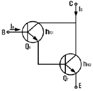
- IC = hFE1ㆍhFE2ㆍIB
- IC = (hFE1 / hFE2)ㆍIB
- IC = hFE2(hFE2+1)IB
- IC = hFE1ㆍIB + hFE2(hFE2+1)ㆍIB
(정답률: 알수없음)
3. 다음은 리플 카운터(ripple counter)이다. 초기 상태 A = 0, B = 0, C = 0 이었다면 클럭 펄스가 12개 인가된 후의 상태는?
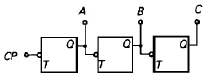
- A = 0, B = 0, C = 1
- A = 0, B = 1, C = 1
- A = 1, B = 1, C = 0
- A = 1, B = 0, C = 0
(정답률: 알수없음)
4. 다음 회로의 설명 중 틀린 것은?
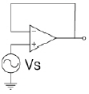
- voltage follower 이다.
- 입력과 출력은 역상이다.
- 입력 전압과 출력 전압은 크기가 같다.
- 입력 임피던스가 매우 크다.
(정답률: 알수없음)
5. 다음과 같은 RC 필터회로에서 리플 함유율을 줄이려면 어느 방법이 옳은가?
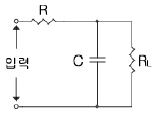
- R, C 를 작게 한다.
- RL, C 를 작게 한다.
- R, C 를 크게 한다.
- RL, C 를 크게 한다.
(정답률: 알수없음)
6. 다음과 같은 회로가 수행할 수 있는 논리 동작은? (단, 부논리이며 A, B는 입력단자이다.)
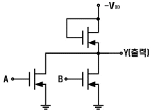
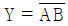
- Y = AB
- Y = A + B
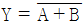
(정답률: 알수없음)
7. 다음 중 트랜지스터 회로의 바이어스 안정도(S)가 가장 좋은 것은?
- S = 1
- S = π
- S = 50
- S = ∞
(정답률: 알수없음)
8. 하틀레이(Hartley) 발진기에서 궤환(feed back) 요소는?
- 콘덴서
- 코일
- 트랜스
- 저항
(정답률: 알수없음)
9. 그림과 같은 회로에서 스위치가 2인 위치에서 t = 0 일 때 1인 위치로 옮겨지는 경우에 회로에 흐르는 전류 I를 나타낸 것은?
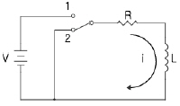
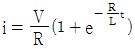
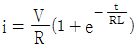
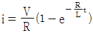
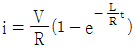
(정답률: 알수없음)
10. 그림과 같은 clipping 회로에 정현파 전압을 가하면 출력 파형은?
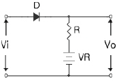
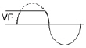
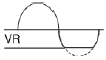
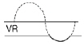
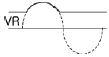
(정답률: 알수없음)
11. RC결합 증폭회로의 이득이 높은 주파수에서 감소되는 이유는?
- 증폭 소자의 특성이 변하기 때문에
- 부성 저항이 생기기 때문에
- 결합 커패시턴스 때문에
- 출력회로의 병렬 커패시턴스 때문에
(정답률: 알수없음)
12. 다음 논리회로의 출력 C를 진리표 내에서 바르게 나타낸 것은?
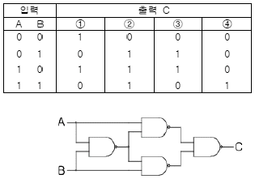
- ①
- ②
- ③
- ④
(정답률: 알수없음)
13. 다음 카르노 맵을 간략화한 결과는?
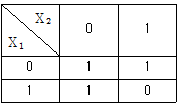
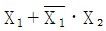
- X1 + X2
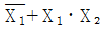
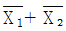
(정답률: 알수없음)
14. 다음 중 동기식 카운터(synchronous counter)의 설명으로 옳지 않은 것은?
- 비동기식보다 최종 플립플롭의 변화 지연시간을 단축시킬 수 있다.
- 입력펄스가 플립플롭의 모든 클록에 동시에 가해지는 구조이다.
- 저속의 카운터가 되지만 플립플롭의 회로가 간단하다.
- 모든 플립플롭이 동시에 동작한다.
(정답률: 알수없음)
15. 다음 논리식은 무슨 법칙을 활용하여 전개한 것인가?
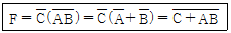
- 보수와 병렬의 법칙
- 드모르간(De Morgan)의 법칙
- 교차와 병렬의 법칙
- 적과 화의 분배의 법칙
(정답률: 알수없음)
16. 그림의 수정진동자 등가회로에서 병렬공진주파수(fp)는?
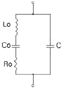
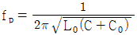
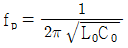
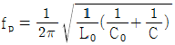
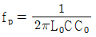
(정답률: 알수없음)
17. 다음 중 주로 고주파 증폭기에 사용되는 것은?
- A급
- B급
- C급
- AB급
(정답률: 알수없음)
18. 그림(a)의 회로망에 그림(b)의 입력파를 인가시 출력파형으로 옳은 것은?
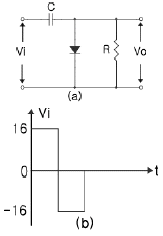
- 0[V]와 +16[V]에 클램프 된다.
- 0[V]와 -16[V]에 클램프 된다.
- 0[V]와 +32[V]에 클램프 된다.
- 0[V]와 -32[V]에 클램프 된다.
(정답률: 알수없음)
19. 다음 중 부궤환에 의해서 얻을 수 있는 효과가 아닌 것은?
- 외부 변화에 덜 민감하므로 이득의 감도를 줄일 수 있다.
- 비선형 왜곡을 줄일 수 있다.
- 불필요한 전기 신호에 의한 영향을 줄일 수 있다.
- 궤환없는 증폭기에 비해 대역폭이 감소한다.
(정답률: 알수없음)
20. 다음 중 펄스파가 상승해 가는 기간의 10[%]에서 90[%]까지 걸리는 시간을 무엇이라 하는가?
- 지연시간
- 하강시간
- 축적시간
- 상승시간
(정답률: 알수없음)
2과목: 방송통신 기기
21. 비디오 특성 측정에 사용되는 시험 패턴에서 멀티버스트 신호는 다음 중 어느 용도에 가장 적합한가?
- 주파수대 위상 측정
- 주파수대 진폭특성 측정
- 과도잡음 특성 측정
- 비직선 왜곡 측정
(정답률: 알수없음)
22. 다음 중 방송시스템에서 영상신호 레벨의 범위는?
- 0~100[IRE]
- 0~80[IRE]
- 0~50[IRE]
- 0~40[IRE]
(정답률: 알수없음)
23. 다음 중 VTR 출력 신호의 시간축 변동을 보정하는 것은?
- TBC
- Frame
- Metrix
- Encoder
(정답률: 알수없음)
24. 국내 무궁화 위성방송에 관한 설명으로 틀린 것은?
- 무궁화 위성은 27[㎒]대역의 방송용 중계기를 가지고 있다.
- 지상으로부터 약 36000[km] 적도 상공의 정지궤도를 이용하고 있다.
- 지상방송과 변조 및 복조방식이 같으나 위성을 이용한 것이 다르다.
- 방송용 중계기는 ku 대역을 사용한다.
(정답률: 알수없음)
25. TV 송신기는 음성과 영상이 2개의 반송파를 사용하고 있는데 이들을 하나의 안테나로 방송하기 위한 결합장치는?
- 저역통과필터
- 수퍼턴스타일
- CIN 다이플렉서
- VSBF
(정답률: 알수없음)
26. 영상신호의 전송을 위해서는 넓은 대역폭이 요구된다. 만일 30[㎑]의 대역폭을 갖는 신호 전송시 PCM에서 요구되는 최소의 표본화 주파수[㎑]는?
- 30
- 40
- 60
- 80
(정답률: 알수없음)
27. 다음 중 우리나라 지상파 디지털 TV의 표준방식은?
- NTSC
- DVB-T
- ATSC
- Eureka-147
(정답률: 알수없음)
28. NTSC 방식의 텔레비전 방송에서 1초간에 전송되는 화상의 수는 얼마인가?
- 30개
- 60개
- 120개
- 1152개
(정답률: 알수없음)
29. 영상프로그램 제작에 기본적으로 사용되는 영상스위쳐에 포함되어 있는 Down steam keyer 의 역할은?
- 스위쳐 최종단에서 송출되는 영상신호에 문자나 도형을 중첩 시키는 기능
- 화면 뒤집기 등 영상 effect를 고려한 기능
- 스위쳐에서 각족 영상소재를 선택할 수 있도록 하는 기능
- 스위쳐에 입력되어 있는 각종 영상소재를 선택하여 사전에 영상소재를 점검할 수 있는 기능
(정답률: 알수없음)
30. CATV에서 헤드 엔드(Head End)의 구성기기가 아닌 것은?
- 변조기
- 신호처리기
- Pilot 신호발생기
- 컨버터
(정답률: 알수없음)
31. 다음 중 위성방송에 대한 설명으로 바르지 않은 것은?
- 강우에 영향을 많이 받아 감쇠가 생긴다.
- 태양 잡음 및 지구 일식 등의 영행을 받는다.
- 신호의 시간 지연이 발생한다.
- 회선의 설정이 유연하지 못하다.
(정답률: 알수없음)
32. 국내 지상파 아날로그 TV 방송에서 사용하고 있는 음성다중 방식은?
- AM-FM 방식
- FM-FM 방식
- 2 Carrier 방식
- 스테레오 FM 라디오 방식
(정답률: 알수없음)
33. TV 송신기에서 VSB(잔류측파대) 변조방식을 사용하는 가장 적합한 이유는?
- 음성신호 주파수의 동기를 용이하게 할 수 있으므로
- 색도와 휘도 등의 동기를 용이하게 할 수 있으므로
- 화면의 잡음성분을 줄일 수 있으므로
- 주파수 대역을 효율적으로 사용할 수 있으므로
(정답률: 알수없음)
34. 슈퍼헤테로다인 수신기의 중간주파수(IF)를 높게 선정하였을 때 개선되는 것은?
- 근접 주파수 선택도
- 단일 조정(Tracking)
- 영상 주파수 선택도
- 증폭도 및 안정도
(정답률: 알수없음)
35. 다음 중 TV 방송프로그램을 안내해 주는 역할을 하는 것은?
- EPG
- CAS
- PPV
- NVOD
(정답률: 알수없음)
36. 영상신호의 색신호 성분을 복조하여 그 위상과 진폭을 브라운관상에 벡터를 표시하는 것은?
- 마스터 모니터
- 벡터스코프
- 파형 모니터
- 오실로스코프
(정답률: 알수없음)
37. 다음 중 비디오계통 시험 측정장비와 가장 거리가 먼 것은?
- Color Picture Monitor
- Spectrum Analyzer
- Waveform Monitor
- Vector Scope
(정답률: 알수없음)
38. TV 중계현장에서 방송국으로 마이크로웨이브에 의해 영상 및 음성신호를 전송하는 장치는?
- FPU(Field Pick Unit)
- DVE(Digital Video Effect)
- Vidicon
- FS(Frame Synchronizer)
(정답률: 알수없음)
39. 다음 중 위성방송에서 초고주파를 사용하는 가장 적합한 이유는?
- 적은 송신전력으로 먼 거리를 전파할 수 있다.
- 안테나를 크게 할 수 있다.
- 전리층 반사를 이용한다.
- 전파의 회절성이 강해 전파도달 범위가 넓다.
(정답률: 알수없음)
40. 진폭변조 회로에서 반송파 전력이 100[W]일 때 변조율이 60[%]일 경우 상측파대의 전력은 몇[W]인가?
- 6
- 7
- 8
- 9
(정답률: 알수없음)
3과목: 방송미디어 개론
41. 다음 중 영상신호의 압축기법과 가장 거리가 먼 것은?
- 엔트로피 부호화
- 변환 부호화
- 논리 부호화
- 예측 부호화
(정답률: 알수없음)
42. 다음 중 인터넷 방송의 특징이 아닌 것은?
- 양방향성
- 주문형 방송
- 시간과 공간의 제약초월
- 콘텐츠의 한계성
(정답률: 알수없음)
43. 다음 중 촬영시 카메라 동작에서 피사체의 움직임을 따라다니는 것은?
- Crain
- Reaction Shot
- Follow Shot
- PAN
(정답률: 알수없음)
44. 국내 디지털 TV방송의 영상신호 압축 포맷 방식은?
- MPEG-2
- MPEG-4
- Dolby AC-3
- AVI
(정답률: 알수없음)
45. 문서를 서로 관련지어 찾아볼 수 있도록 만들어진 문서형식을 뜻하는 것은?
- 하이퍼미디어(Hypermedia)
- 하이퍼텍스트(Hypertext)
- 텔레텍스(Teletex)
- 텔레텍스트(Teletext)
(정답률: 알수없음)
46. 스테레오 시스템에서 두 개의 스피커로 주파수와 음압이 동일한음을 동시에 재생하면, 인간의 귀에는 두 개의 소리가 정중앙에서 재생되는 것처럼 느껴지는 효과는?
- 마스팅 효과
- 바이노럴 효과
- 하스 효과
- 칵테일 파티 효과
(정답률: 알수없음)
47. 수평톱니파의 주파수가 15750[㎐]이며, 귀선시간이 18[%]일 때 1회 유효주사선 시간은 약 얼마인가?
- 3[μs]
- 16[μs]
- 52[μs]
- 63[μs]
(정답률: 알수없음)
48. 텔레비전 수신기에서 2차원의 화상을 1차원의 전기적인 신호로 전송하기 위해 2차원 화상을 1차원적인 화상으로 재배열 하는 것은?
- 변조
- 주사
- 복조
- 편이
(정답률: 알수없음)
49. 다음 중 디지털미디어 분류에 속하지 않는 것은?
- IPTV
- NTSC식 TV
- DMB
- 인터넷신문
(정답률: 알수없음)
50. 제작된 테이프에 대사 녹음이나 효과음악 등을 재녹음 하는 것은 무엇이라고 하는가?
- 다큐멘터리
- 더빙
- 나레이션
- 이벤트
(정답률: 알수없음)
51. 디지털 TV의 국제통일 규격의 크로마 포맷은?
- 4 : 1 : 1
- 4 : 2 : 2
- 4 : 4 : 1
- 4 : 4 : 2
(정답률: 알수없음)
52. 다음 중 양자화를 바르게 설명한 것은?
- 원신호의 증폭
- 샘플링 주파수의 선정
- 샘플링된 신호를 디지털 양으로 표시
- 디지털 신호의 아날로그화
(정답률: 알수없음)
53. 다음 중 전화, 통신 및 영상 서비스가 복합적으로 이루어지는 미디어를 지칭하는 것은?
- 멀티미디어
- 통신미디어
- 화상미디어
- 인쇄미디어
(정답률: 알수없음)
54. 다음 중 TV와 연결하여 사용이 가능한 대화형 CD는?
- CD-DA
- CD-I
- CD-DV
- CD-G
(정답률: 알수없음)
55. 다음 중 인쇄 미디어인 잡지의 특성을 가장 바르게 표현한 것은?
- 속보성을 가진다.
- 시청각적이다.
- 디자인 의존도가 높다.
- 지역매체이다.
(정답률: 알수없음)
56. 다음 중 주문형비디오(VOD) 서비스 범주와 가장 거리가 먼 것은?
- Movie on demand
- Games
- Distance learning
- Facsimile
(정답률: 알수없음)
57. 인터넷 방송에서 이용하는 음향 압축 파일이 아닌 것은?
- ATRAC
- MP3
- WAV
- AVI
(정답률: 알수없음)
58. 다음 중 영상을 저장하는 방법에서 비트맵 영상이란?
- 영상 객체의 속성을 부호로 표시하는 방식이다.
- 각 좌표의 색상을 표시하는 방식이다.
- 영상 객체의 속성을 속도로 표시하는 방식이다.
- 각 좌표의 면적을 표시하는 방식이다.
(정답률: 알수없음)
59. 음성의 파형을 직접 양자화하지 않고 파형을 분석하여 유성음, 무성음으로 구분하여 기본주기, 성도의 계수 등 특성만을 추출하여 전송하는 방식은?
- ARS(Audio Response System)
- VRS(Video Response System)
- 보코딩(Vocoding) 방식
- MHS(Message Handling System)
(정답률: 알수없음)
60. 음향 신호를 전송하거나 녹음할 때 최강음과 최악음의 비를 [dB]로 나타낸 것을 무엇이라 하는가?
- 다이나믹레이지
- S/N 비
- SPL
- 정재파비
(정답률: 알수없음)
4과목: 전자계산기 일반 및 방송설비기준
61. 다음 중 소프트웨어 수명을 연장시키는 목표와 가장 거리가 먼 것은?
- 정확성
- 유지 보수의 용이성
- 재사용성
- 유연성
(정답률: 알수없음)
62. 다음 중 원시 프로그램을 목적 프로그램으로 바꾸어주는 것은?
- 어셈블리언어
- 프로그램라이브러리
- 연계편집프로그램
- 어셈블러
(정답률: 알수없음)
63. 다음 중 1비트 기억 장치는?
- 플립플롭
- 레지스터
- 누산기
- 디코더
(정답률: 알수없음)
64. 다음 중 CPU에 인터럽트가 발생할 때의 OS 동작 설명으로 옳지 않은 것은?
- 수행중인 프로세스나 스레드의 상태를 저장한다.
- 인터럽트 종류를 식별한다.
- 인터럽트 서비스 루틴을 호출한다.
- 인터럽트 처리 결과를 텍스트 형식의 파일로 저장한다.
(정답률: 알수없음)
65. 다음 레지스터들 중에서 Read하거나 Write 할 때 반드시 거쳐야 하는 레지스터는?
- MAR(Memory Address Register)
- MBR(Memory Buffer Register)
- PC(Program Counter)
- IR(Instruction Register)
(정답률: 알수없음)
66. Binary Code 11010을 Gray Code로 변환한 값은?
- 11011
- 10111
- 11101
- 11110
(정답률: 알수없음)
67. 다음은 10진수를 표현하는 이진 코드(binary code)들이다. 이들 중 자체 보수화(self-complementary)가 불가능한 코드는?
- 51111코드
- BCD코드
- Excess-3 코드
- 2421코드
(정답률: 알수없음)
68. 다음 그림과 같은 트리를 후위 순회(postorder)한 결과는?
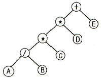
- +**/ABCDE
- AB/C*D*E+
- A*B+C*D/E
- A*B+CD*/E
(정답률: 알수없음)
69. 프로그램카운터의 기능에 대한 설명으로 옳은 것은?
- 다음에 수행할 명령의 주소를 기억하고 있음
- 데이터가 기억된 위치를 지시함
- 기억하거나 읽은 데이터를 보관함
- 수행중인 명령을 기억함
(정답률: 알수없음)
70. 다음 중 n개의 비트로 표시할 수 있는 데이터의 수는?
- n개
- n2개
- 2n개
- 2n-1개
(정답률: 알수없음)
71. 다음 중 유선방송국의 구내전송선로설비가 아닌 것은?
- 분기기 및 분배기
- 증폭기
- 주전송장치
- 관로
(정답률: 알수없음)
72. 다음 중 방송법상 방송의 공적책임에 속하지 아니하는 것은?
- 방송은 인간의 존엄과 가치 및 민주적 기본질서를 존중하여야 한다.
- 방송에 의한 보도는 공정하고 객관적이어야 한다.
- 방송은 타인의 명예를 훼손하거나 권리를 침해하여서는 아니된다.
- 방송은 범죄 및 부도덕한 행위나 사행심을 조장하여서는 아니된다.
(정답률: 알수없음)
73. 다음 중 바송 공동수신 안테나 시설에 속하지 않는 것은?
- 송신안테나
- 증폭기
- 선로
- 수신안테나
(정답률: 알수없음)
74. 정보통신공사업법에서 규정하고 있는 공사의 구분이 아닌 것은?
- 방송설비공사
- 통신설비공사
- 정보설비공사
- 선로공사
(정답률: 알수없음)
75. 방송사업에서 종합편성 또는 보도전문편성을 행하는 사업자는 시청자의 권익을 보호하기 위하여 두는 것은?
- 방송통신위원회
- 심의위원회
- 시청자위원회
- 시청자분만처리위원회
(정답률: 알수없음)
76. 다음 중 유선방송국 설비에 대한 매월 측정·시험 대상이 아닌것은?
- 전원험 변조도
- 반송파 신호레벨
- 혼변조도
- 혼신, 잡음 지수레벨
(정답률: 알수없음)
77. 해당 무선통신업무를 실용에 옮길 목적으로 시험적으로 개설하는 무선국은?
- 실험국
- 실용국
- 실용화시험국
- 시험용실용국
(정답률: 알수없음)
78. 지상파방송사업을 하고자 할 때 허가를 받아야 하는 기구는?
- 지식경제부
- 문화체육관광부
- 방송통신위원회
- 교육과학기술부
(정답률: 알수없음)
79. 다음 중 방송법에 의한 용어의 설명으로 ( ) 안에 적합한 것은?
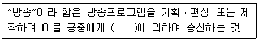
- 전기통신설비
- 정보통신설비
- 유선방송설비
- 전송통신설비
(정답률: 알수없음)
80. 다음 중 방송전파의 질을 평가하는 기준이 아닌 것은?
- 주파수 허용편차
- 공중선 전력의 크기
- 점유주파수 대역폭의 허용값
- 스퓨리어스(spurious)발사 강도의 허용값
(정답률: 알수없음)